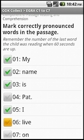

Max Heinritz . Spring 2011 . Advisors: Prof. Wagner, Prof. Ungar, Katie Murphy
This web page presents a fully functional ICT system for EGRA data collection.
The Early Grade Reading Assessment (EGRA) is an education evaluation instrument used to measure student literacy in developing countries. The test is administered by trained enumerators who assess samples of students at multiple schools. Results are currently recorded on paper and then manually digitized when enumerators return from fieldwork. With the ICT system introduced here, results would instead be recorded on mobile phones and transmitted over the Internet. The system relies heavily on Open Data Kit, a set of open-source software for mobile data collection, storage, and aggregation. The results are analyzed online with Google Apps Script.
